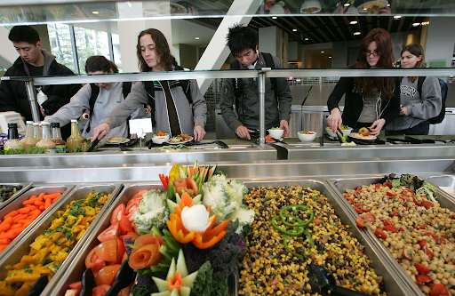

Fuel Your Future Without Draining Your Wallet
Food insecurity is the lack of consistent access to enough affordable, nutritious food for an active, healthy life. It can range from worrying about having enough food to eat to actually skipping meals or going without food because of limited money or resources.For college students, food insecurity means that a student may not always have enough money or resources to obtain the food they need. Students may experience food insecurity because of high tuition and housing costs, limited income, lack of transportation, or unexpected expenses. As a result, they might skip meals, eat less nutritious foods, rely on food pantries or meal programs, or choose between buying food and paying for necessities such as rent, textbooks, or utilities.Food insecurity can also affect students' physical health, mental well-being, academic performance, and ability to succeed in college.
Understanding Student Food Insecurity in Portland-Vancouver
Who is most affected in the Vancouver/Portland Metropolitan area?
In the Vancouver/Portland metropolitan area, college students most affected by food insecurity tend to be those facing low incomes and other barriers to stable resources. Local and regional data point to several groups:
- Low-income students: Financial pressure from tuition, rent, transportation, and other expenses makes food insecurity more likely. Washington's 2024 survey found basic-needs insecurity among 70% of students with low incomes.
- First-generation college students: Students whose parents did not complete a bachelor's degree experience higher rates of basic-needs insecurity. Washington reported a 63% rate among first-generation students in 2024.
- Black, Indigenous, and other students of color: These students experience disproportionately high rates, particularly American Indian/Alaska Native and Black students.
- Students with children or dependents: Childcare and household expenses can make it difficult to afford food. Washington reported 68% basic-needs insecurity among students with dependents.
- Students with disabilities: Students with disabilities also experience higher rates of basic-needs insecurity, with Washington reporting 65% in 2024.
- Former foster youth and students who have experienced homelessness: These are among the most vulnerable groups. Washington reported basic-needs insecurity among 84% of students who had experienced foster care or homelessness in high school.
There is also strong evidence within the Portland area itself. At Portland Community College, 43% of survey respondents reported food insecurity in the previous 30 days. At Portland State University, 53.9% of student respondents reported food insecurity in the previous 30 days.
What factors contribute to food insecurity?
Several factors can contribute to food insecurity among college students in the Vancouver/Portland metropolitan area. Often, students experience several of these challenges at the same time:
- Tuition and education expenses: Tuition, textbooks, fees, and other school costs can leave less money available for groceries.
- High housing costs: Rent and utilities take up a large portion of many students' budgets, so food is often one of the expenses students cut back on.
- Transportation costs: Gas, public transportation, car payments, and maintenance can make it harder to afford food—especially for students who commute to campus.
- Inflation and rising food prices: Increases in the cost of groceries and other necessities reduce students' purchasing power.
- Limited work hours and unpredictable income: Full-time students and those with part-time, seasonal, or inconsistent work may not earn enough to cover their living expenses.
- Financial aid limitations: Grants, scholarships, and loans may not fully cover living expenses, and students may face delays or gaps in assistance.
- Family and caregiving responsibilities: Students supporting children, relatives, or other dependents have additional expenses that can compete with their food budget.
- Limited access to affordable food and unexpected expenses: Transportation, cooking facilities, medical bills, car repairs, and housing emergencies can quickly consume grocery money.
Food insecurity is usually not caused by a lack of knowledge about nutrition or budgeting. It is often the result of students' available income being insufficient to keep up with the combined costs of education, housing, transportation, food, and other basic needs.
Data & Evidence: How extensive is the problem?
Food insecurity is a significant issue for college students both locally in the Vancouver/Portland metropolitan area and nationally.
Local evidence
- Portland State University: 53.9% of student respondents reported experiencing food insecurity during the 30 days before the 2023 survey.
- Portland Community College: 43% of survey respondents experienced food insecurity during the previous 30 days in the 2023 Student Basic Needs Survey; 64% experienced food insecurity, housing insecurity, or homelessness.
- Washington statewide survey: In 2024, 45.0% of students at two-year colleges and 42.4% at four-year colleges experienced food insecurity.
National evidence
- The Hope Center's 2023–2024 Student Basic Needs Survey of 74,350 students at 91 colleges and universities found that 41% experienced food insecurity, 48% experienced housing insecurity, and 14% experienced homelessness.
- Overall, 59% experienced at least one form of food or housing insecurity.
- Nationally representative federal data found that nearly 1 in 4 undergraduate students—about 4.3 million students—experienced food insecurity.
These figures show that food insecurity is a widespread barrier to college success, rather than an issue affecting only a small number of students. Local rates at PSU and PCC are particularly striking, with 43%–54% of survey respondents reporting food insecurity.